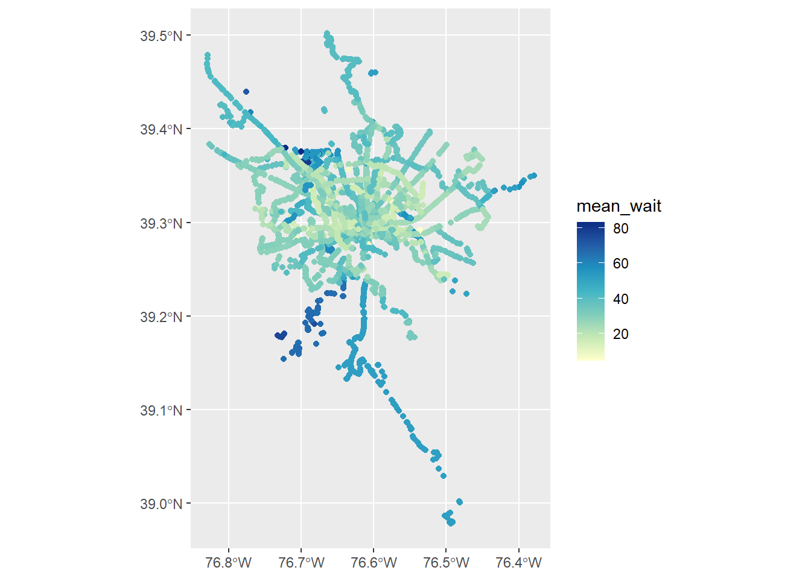

Calculating Stop Waits
Where is the longest wait for a bus?
We calculated headways, which gives us a sense of service frequencies at the route level. What does this look like at the stop level? What stops receive the most service and what stops receive the least? What stops experience the longest waits between buses? By calculating some simple summary statistics, we can figure that out. Then, we’ll use those to make some maps.
library(gtfstools)
library(tidyverse)
library(sf)Adding new grouping variables
We’ll start by removing grouping from the headways table we created on the last page.
headways_fil <- ungroup(headways_fil)Next, we group by stop_id, since that is now the scale of the data we are interested in (as opposed to routes and patterns in the case of headways). To get the mean wait time at each stop, we just summarise each stop_id by the mean of the headway column. Incredibly, we can do this pretty sizable calculation, that summarizes thousands of rows of data into a few hundred, in a very small code block, thanks to the power of magrittr’s %>%.
stop_waits <- headways_fil %>% ##calling the headways table
group_by(stop_id) %>% ##grouping by stop_id
summarise(mean_wait = mean(headway_m, na.rm = TRUE))Making it spatial
The stops table of a GTFS has longitude and latitude information that we can join to our new table of mean waits.
#storing the names of the lat-long colummns as a character vector
coordinates = c("stop_lon", "stop_lat")
#joining our table of mean waits to the stops table from the gtfs
stop_join <- inner_join(stop_waits, gtfs_fil$stops) Joining with `by = join_by(stop_id)`#make it spatial
stop_join <- st_as_sf(stop_join, coords = coordinates, crs = 4326)Mapping bus stop wait times
Now let’s make a quick map using ggplot.
ggplot(stop_join) +
geom_sf(aes(color = mean_wait), size = 1.5) +
scale_colour_distiller(palette = "YlGnBu", direction = 1)
This confirms what we might have already guessed: the shortest wait times appear to be in the core of the service area, Baltimore’s downtown. But where are the longest waits?
library(mapview)
#grab 25 longest waits
top_25 <- stop_join %>%
slice_max(mean_wait, n = 25)
mapview(top_25)It looks like the top 25 stops based on wait time are in the inner suburbs to Baltimore’s northwest, an area of Northwest Anne Arundel County, and one lonely stop in Dundalk. It might be worth further investigating service at these stops. For example, how many bus trips do they receive per day? If it’s less than a dozen, that could account for the long waits and perhaps we may exclude them from future analyses.